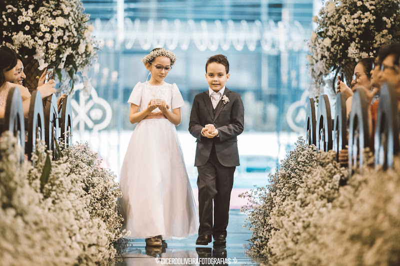

Amanda Arruda Cerimonial organiza e conduz eventos em Fortaleza, do primeiro encontro ao último convidado.

Nada de orçamento jogado no meio da correria: primeiro a gente senta e entende o seu evento.
Você escolhe um horário e conversamos com calma sobre o que imagina.
O evento vira um plano organizado, com tudo o que precisa acontecer até o dia.
No dia, o cerimonial conduz cada momento para você só aproveitar.
Uma reunião só para o seu evento. Sem correria, sem fila, com atenção total.
Conte o seu evento e explicamos, na reunião, como o cerimonial pode ajudar.
Responda algumas perguntas e envie o resumo pelo WhatsApp para marcar a sua reunião.